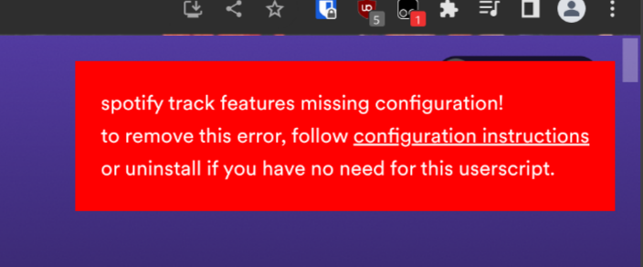

<!DOCTYPE html>
<html>
  <title>spotify track features by tnrlr</title>
  <link rel="stylesheet" type="text/css" href="/index.css" />
  <meta name="viewport" content="width=device-width, initial-scale=1" />
</html>
<body>
  <h1>spotify track features userscript</h1>
  <p>
    it does this:<br />
    
  </p>
  <h2>setup</h2>
  <ol>
    <li>
      install <a href="https://www.tampermonkey.net/">tampermonkey</a>, a
      browser extension that allows you to use userscripts
    </li>
    <li><a href="spotify-track-features.user.js">click here</a> to install the userscript</li>
    <li>go to <a href="https://open.spotify.com" target="_blank">open.spotify.com</a> and check that the configuration error is present
    </li>
    

    <li>get logged into <a href="https://developer.spotify.com/dashboard/login" target="_blank">spotify's developer dashboard</a></li>
    <li>once logged in, select "create an app", fill in something for the name and description (doesn't matter what), hit create</li>
    
    <li>once in the app screen, hit "show client secret" and take note of the "client id" and "client secret" values. the userscript will use these to fetch track info from spotify's API. <strong>don't share these with anyone</strong></li>
    
    <li>open tampermonkey's dashboard by clicking on it in your extensions toolbar and selecting "dashboard"</li>
    <li>navigate to tampermonkey "settings" and change the "config mode" to "advanced"</li>
    
    <li>go to "installed userscripts" tab in tampermonkey dashboard, click on the userscript name ("spotify track features"), then select the "storage" tab, you should see something like this</li>
    
    <li>replace "CHANGE ME" with the client id and client secret values you got on the spotify app dashboard earlier, then hit save</li>
    <li>go back to <a href="https://open.spotify.com" target="_blank">open.spotify.com</a>, refresh, and open a playlist, you should get track info! i'm working on expanding support to all pages, spotify's ui is a bit shoddy for work like this.</li>
  </ol>
</body>
